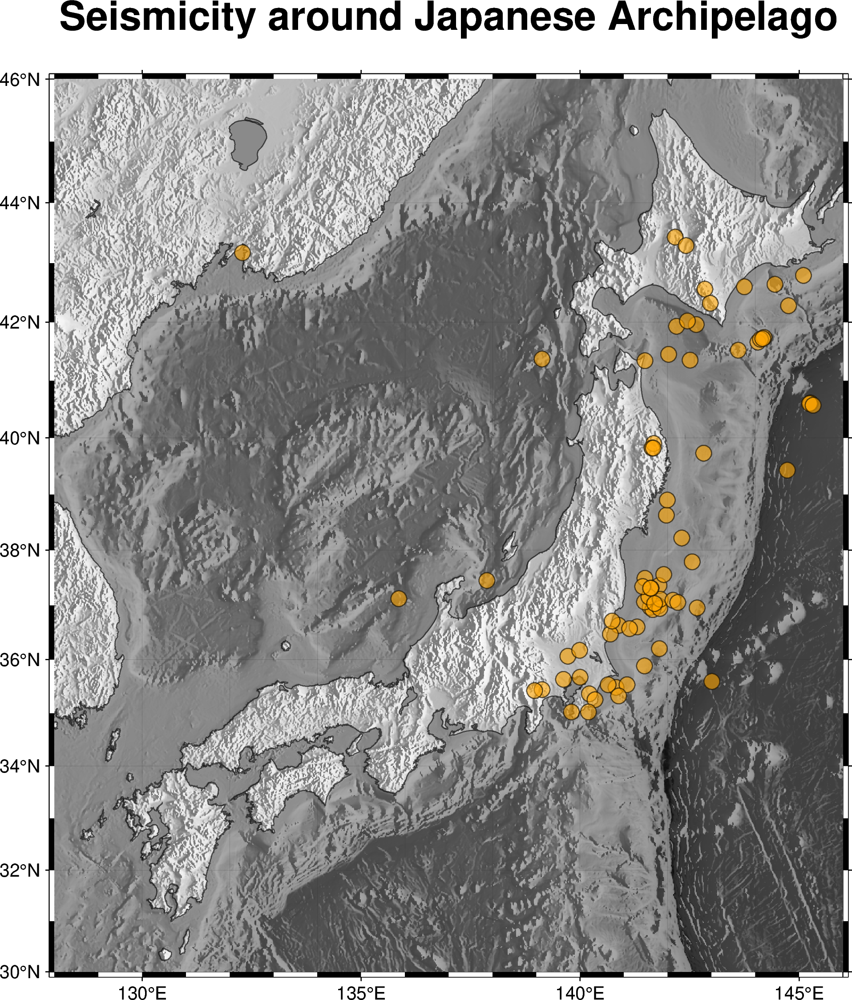
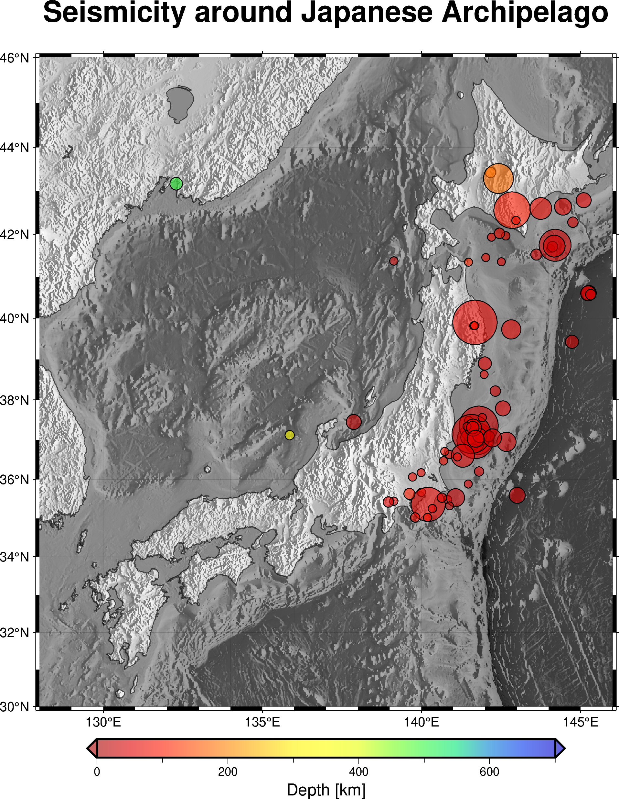

import pygmt地図上への情報描画
Abstract
単に地図を描くだけでなく，そこにさまざまなデータの可視化を組み合わせられるのがPyGMT (GMT) の強みです．ここでは震源分布の可視化を通じてその方法を学びます．
データの準備
pygmtが用意しているexampleデータに日本列島周辺の地震情報がありますので，それを題材にしてプロットしてみましょう．
hypdata = pygmt.datasets.load_sample_data(name='japan_quakes')上記コマンドはデモンストレーション用のデータセットの読み込みの専用コマンドです．オンラインからデータを読み込むので多少時間がかかります．
Warning
このコマンドは PyGMT v0.5.0 までは
hypdata = pygmt.datasets.load_japan_quakes()でした．
震源情報は，pandasのデータフレームとして変数 data に格納されます．ただしここではpandasの細かい利用法を意識する必要はありません．printしてみると，ほどよく途中を省略してデータフレームの概略を表示してくれます．
print(hypdata) year month day latitude longitude depth_km magnitude
0 1987 1 4 49.77 149.29 489 4.1
1 1987 1 9 39.90 141.68 67 6.8
2 1987 1 9 39.82 141.64 84 4.0
3 1987 1 14 42.56 142.85 102 6.5
4 1987 1 16 42.79 145.10 54 5.1
.. ... ... ... ... ... ... ...
110 1988 11 10 35.32 140.88 10 4.0
111 1988 11 29 35.88 141.47 46 4.0
112 1988 12 3 43.53 146.98 39 4.3
113 1988 12 20 43.94 146.13 114 4.5
114 1988 12 21 42.02 142.45 73 4.5
[115 rows x 7 columns]Pandasのデータフレームは表形式で複数の列が名前付きで含まれていることがわかるでしょう．このなかから特定の列のデータを取り出すには，たとえば
data.yearのように 変数名.列名 とします．
固定サイズ単一色のプロット
まずは単純シンボルプロットから行いましょう． fig.plot で x軸（経度方向）とy軸（緯度方向）のデータ配列を個別に指定します．
grid_data = pygmt.datasets.load_earth_relief(
resolution='01m',
region = [128, 150, 28, 50]
)
gradient_data = pygmt.grdgradient(
grid = grid_data,
azimuth = [45, 135],
normalize = 'e0.7'
)fig = pygmt.Figure()
fig.basemap(
region = [128, 146, 30, 46],
projection = 'M15c',
frame = ['WSen+tSeismicity around Japanese Archipelago', 'xaf', 'yaf'],
)
fig.grdimage(
region = [128, 146, 30, 46],
grid = grid_data,
shading = gradient_data,
cmap = 'gray' # 地震のほうを目立たせるため地形はモノクロに
)
fig.coast(
shorelines = 'thinner,black@40',
area_thresh = '100',
resolution = 'h',
water = '30@70' # 海域をすこし暗くする
)
# 震央分布のプロット
fig.plot(
x = hypdata.longitude, # 横軸データ
y = hypdata.latitude, # 縦軸データ
fill = 'orange', # 塗りつぶし色の指定
style = 'c0.3c', # 固定サイズの場合は (symbol)(size) 指定
pen = 'thinner,black', # 縁取りのペン
transparency = 40 # コマンド全体に影響する透明度設定
)
fig.show(width="80%")
この図では，tranparency オプションでプロットするデータの透明度を指定しています．数値が100に近いほど透明に近くなっていきます．tranparencyオプションの代わりに，色名やRGB値に
color = 'red@60'のように指定する方法もあります．この方法だと，たとえば塗りつぶしの色は半透明にするものの，penオプションで指定する縁取りの線は不透明にする，というようなことも実現できます．
Warning
transparency オプションを frame を指定しているコマンドに付与すると，図の枠やラベルが半透明になってしまいます．半透明オプションの使い所には注意が必要です．
Warning
地形段彩図の描画ページでも紹介しましたが，最新のPyGMTでは plot 関数の色の塗りつぶしオプションが color から fill に変更となりました．
可変サイズ・可変色プロット
次に，マグニチュードと深さを用いてシンボルの色と大きさを変化させてみましょう．
fig = pygmt.Figure()
fig.basemap(
region = [128, 146, 30, 46],
projection = 'M15c',
frame = ['WSen+tSeismicity around Japanese Archipelago', 'xaf', 'yaf'],
)
fig.grdimage(
region = [128, 146, 30, 46],
grid = grid_data,
shading = gradient_data,
cmap = 'gray'
)
fig.coast(
shorelines = 'thinner,black@40',
area_thresh = '100',
resolution = 'h',
water = '30@70'
)
pygmt.makecpt(
cmap = 'seis', # カラーマップを選択
series = [0, 700, 50], # min/max/increment
background = True, # 値の上限・下限超過データの色を上限値・下限値と等しくする
continuous = True,
transparency = 40
)
fig.plot(
x = hypdata.longitude,
y = hypdata.latitude,
style = 'c',
pen = 'thinner,black',
size = 0.05 + 0.01 * (2**hypdata.magnitude), # サイズ指定（cm）
cmap = True, # カラーマップ利用
fill = hypdata.depth_km, # 深さデータに基づき色を判断
)
fig.colorbar(
position = '+e',
frame = ['x+lDepth [km]'],
)
fig.show(width="80%")
カラーパレットの扱い
pygmt.makecpt でカラーパレットファイルを作成できます． デフォルトでは，作成したカラーパレットがそのセッションの標準として登録され，それ以降のコマンドでのカラーパレットとして自動的に利用されます．
複数のカラーパレットを同時に使い分けたいなど，明示的にカラーパレットを指示したいときには，pygmt.makecpt の output オプションでファイル名を指定して .cpt ファイルを作成することもできます．その場合には，plot コマンドの cmap オプションにはその .cpt ファイル名を指定します．
また，fig.colorbar は指定あるいは標準のカラーパレットに基づきカラースケールを描画します．位置指定を明示的にしない場合には，直前に描画した図の下部中央に配置されます．frame には数多くの指定ができるようですが，特に +eを指定すると，カラースケールの上限と下限を超えた値の色をカラースケール両側の三角形に示してくれます．